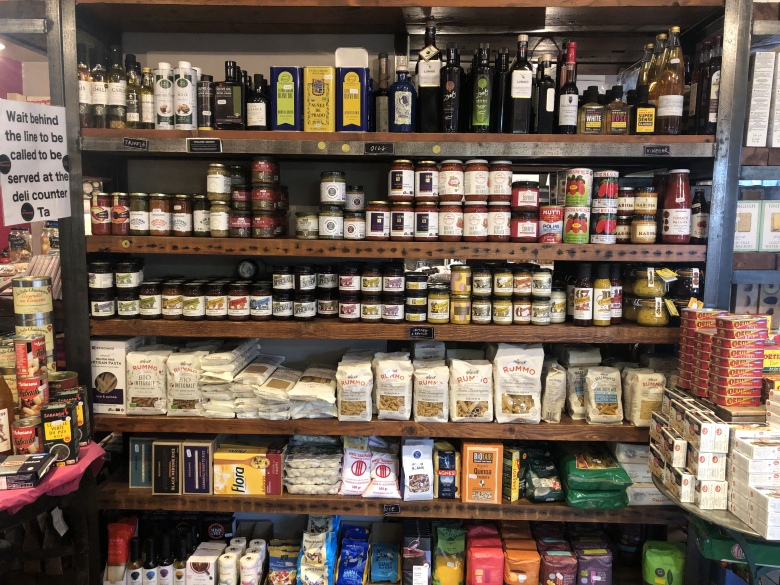

안녕하세요. 저희는 건강한 식품만을 다루는 온라인 쇼핑몰 healthy market 입니다.
어머니가 차려주시던 건강한 밥상, 안심하고 먹을 수 있는 한끼를 위해 healthy food를 구독하세요.
쇼핑몰 구독자들에게 무료배송과 신선한 먹거리를 보장합니다.
healthy market은 1934년 작은 식료품가게에서 시작하여 지금의 온라인 쇼핑몰이 되었습니다.
건강한 식사를 책임지겠다는 초창기의 마인드를 잃지 않고 경영하고 있습니다.

해외에서도 인정받는 Healthy Market 입니다.
Korean corporate launches aggressive marketing at Qatar World Cup
Football is not the only boom in Qatar and other Middle Eastern countries. Korean food is captivating the taste
buds of many locals as the popularity of Korean culture spreads in the region, according to food industry
officials.
Over the past few years, sales of Korean food items there have grown rapidly thanks to YouTube content, like
"Buldak Ramen" challenges with Samyang Foods' instant noodle, and the Oscar-winning film Parasite that featured
Nongshim's "Jjapaguri" noodle product.
As the market for Korean foods shows potential there, local food firms like CJ CheilJedang, Daesang, Nongshim
and Samyang Foods have started expanding their business in the Middle East. They are especially taking advantage
of the ongoing World Cup to promote their products.
CJ CheilJedang has already begun selling its popular products such as dried seaweed, kimchi and instant rice
under its global Korean food brand Bibigo at 10 local large discount Almeera stores in Doha during the World
Cup. The company plans to promote its Korean food products until the end of this month and expand its business
in 68 Almeera stores afterward.
"In October alone, our sales of Bibigo's dried seaweed and kimchi products surged 20 percent and 30 percent,
respectively, year-on-year. We are focusing on strengthening our marketing to increase sales in the Middle
East," a CJ CheilJedang official said. The food company expects to achieve over 16 billion won in exports from
the Middle East this year.
The country's No.1 meal kit maker Fresheasy sells 17 types of food items in Dubai and Saudi Arabia at One Mart,
a local online and offline retail channel. Its ready-made products include stir-fried octopus, seaweed soup and
soup-tteokbokki. Tteokbokki is a stir-fried rice cake made with red pepper paste.
"With the trend of consuming healthy foods going viral in the Middle East, local consumers have become more
interested in Korean food, which is low in calories and made with vegetables mainly. Our food items made with
sea mustard and sea fulvescens are selling well," a Fresheasy official said. The food firm plans to achieve $5
million (6.6 billion won) in export this year based on its business expansion in the Middle East market.